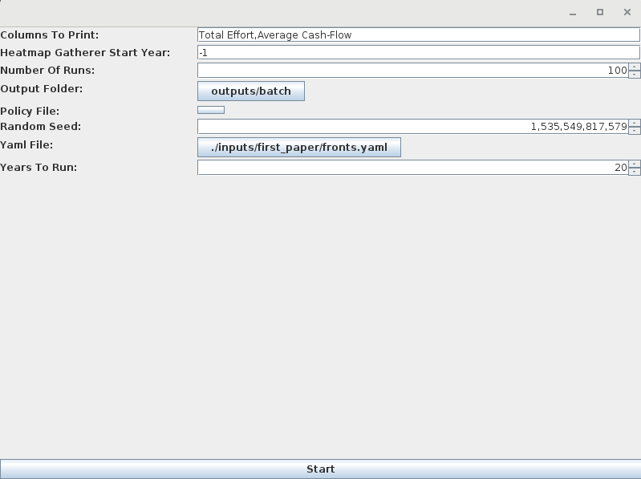
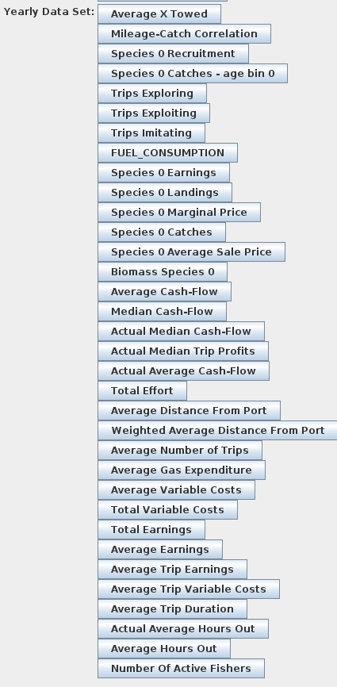
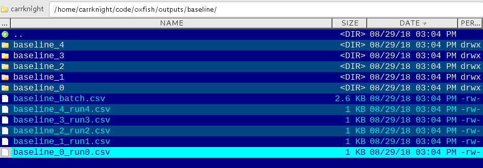
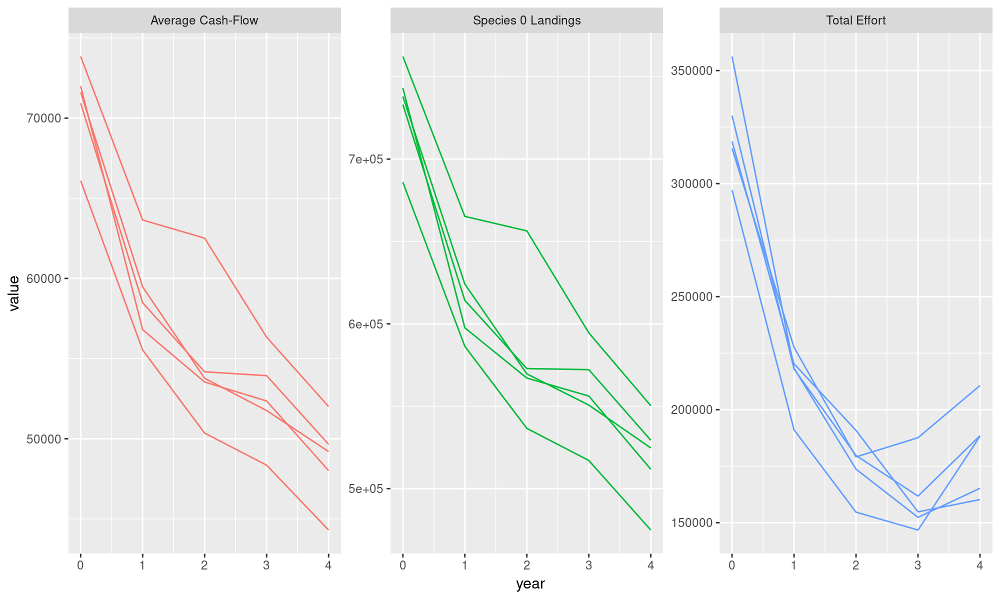

Chapter 7 YAML Scearios and Batch Runs
7.1 YAML
So far we’ve been modifying parameters and scenarios by using the GUI. These scenarios can be saved, modified and loaded as text files too. They follow the YAML format.
For example, in the POSEIDON parameter section we can press Save Scenario to File to save our parameters into a single, yaml file.
You can open it and edit it as a text file (any editor will do except Windows’ notepad; try wordpad or notepad++). It will look something like this:
Abstract:
biologyInitializer:
Diffusing Logistic:
carryingCapacity: '5000.0'
differentialPercentageToMove: '0.001'
grower:
Independent Logistic Grower:
steepness: uniform 0.6 0.8
maxInitialCapacity: '1.0'
minInitialCapacity: '0.0'
percentageLimitOnDailyMovement: '0.01'
speciesName: Species 0
cheaters: false
departingStrategy:
Fixed Rest:
hoursBetweenEachDeparture: '12.0'
destinationStrategy:
Imitator-Explorator:
alwaysCopyBest: true
automaticallyIgnoreAreasWhereFishNeverGrows: false
automaticallyIgnoreMPAs: false
backtracksOnBadExploration: true
dropInUtilityNeededForUnfriend: '-1.0'
ignoreEdgeDirection: true
ignoreFailedTrips: false
maxInitialDistance: -1.0
objectiveFunction:
Hourly Profit Objective:
opportunityCosts: true
probability:
Adaptive Probability:
explorationProbability: '0.2'
explorationProbabilityMinimum: '0.01'
imitationProbability: '1.0'
incrementMultiplier: '0.02'
stepSize: uniform 1.0 10.0
discardingStrategy: No Discarding
enginePower: normal 5000.0 100.0
fishers: 100
fishingStrategy:
Until Full With Day Limit:
daysAtSea: '5.0'
fuelTankSize: '100000.0'
gasPricePerLiter: '0.01'
gear:
Random Catchability:
gasPerHourFished: '5.0'
meanCatchabilityFirstSpecies: '0.01'
meanCatchabilityOtherSpecies: '0.01'
standardDeviationCatchabilityFirstSpecies: '0.0'
standardDeviationCatchabilityOtherSpecies: '0.0'
gearStrategy: Never Change Gear
habitatInitializer: All Sand
holdSize: '100.0'
literPerKilometer: '10.0'
logbook: No Logbook
mapInitializer:
Simple Map:
cellSizeInKilometers: '10.0'
coastalRoughness: '4.0'
depthSmoothing: '1000000.0'
height: '50.0'
maxLandWidth: '10.0'
width: '50.0'
mapMakerDedicatedRandomSeed: null
market:
Fixed Price Market:
marketPrice: '10.0'
networkBuilder:
Equal Out Degree:
allowMutualFriendships: true
degree: '2.0'
equalOutDegree: true
plugins: [
]
portPositionX: -1
portPositionY: -1
ports: 1
regulation:
MPA Only:
startingMPAs: [
]
speedInKmh: '5.0'
startingMPAs: [
]
usePredictors: false
weatherInitializer:
Constant Weather:
temperature: '30.0'
windOrientation: '0.0'
windSpeed: '0.0'
weatherStrategy: Ignore WeatherThis is just the list of all parameters from the gui into a text file.
There are a few uses for this:
- Save parameters for iterative modifications or replications
- Make batch runs
- Machine readable input to interoperate with other software (probably an optimizer)
- Modify parameters for which the GUI is not ready yet (sorry!~). These are things like list of strategies and ports. We will see this more in the Peter Snapper example.
7.2 Batch Runs
POSEIDON, as all other agent-based models, contains many stochastic parts. In order to draw conclusions from POSEIDON outputs, the same scenario must be run many times – each run will provide slightly different outcomes. By looking at the distribution of outcomes, you can get a sense of the uncertainty around a result.
POSEIDON has a batch runner you can use to automate this process. In essence it reads a YAML file, and runs it many times. You can call it by running from terminal (in the POSEIDON directory):
Or on windows:
gradlew.bat batchIt is a quite simple graphical interface:  Its parameters are:
Columns To Print: a list, subdivided by “,” of all the yearly data sets we want to collect for each simulation. Unfortunately it is case-sensitive and so quite annoying to use. The kind of data collectable depends on each scenario but they the buttons that appear inYearly Data Setin theAggregate Datatab of a normal POSEIDON RUN: Heatmap Gatherer Start Year: when this is positive it will collect a heatmap of all the fisher effort from that year till the end of the simulationNumber of Runs: How many times to run the scenarioOutput Folder: which directory will store all the results of the batch runPolicy File: an additional input scenario to simulate policy shocksRandom Seed: the random seed defining the first simulation. Copying a previous random seed should generate an exact replica of the simulation including all the stochastic components.Yaml File: the path of the scenario YAML file to runYears to Run: how many years should each scenario simulate?
7.3 Sample Batch Run
Open the batch runner. Set the runs and years to run to 5 and add “Species 0 Landings” to the list of columns to print.baseline.yaml which is just a file I created by pressing Save Scenario to File from POSEIDON’s scenario selector without modifying any parameter.Start you will see a very basic progress bar showing how many simulations have completed.
Once completed you can look in the Output Folder and see a bunch of files:

Each directory contains all the data produced by each simulation, the run$.csv file contain a table of all the selected data columns to print:
## # A tibble: 5 x 3
## `Total Effort` `Average Cash-Flow` `Species 0 Landings`
## <dbl> <dbl> <dbl>
## 1 356233. 71605. 737979.
## 2 218308. 59469. 624133.
## 3 173664. 53773. 569650.
## 4 152381. 51758. 550701.
## 5 165219. 49201. 524677.Probably the most important file is the _batch.csv file which contains all the selected columns for all runs in a tidy format:
## # A tibble: 75 x 4
## run year variable value
## <int> <int> <chr> <dbl>
## 1 0 0 Total Effort 356233.
## 2 0 1 Total Effort 218308.
## 3 0 2 Total Effort 173664.
## 4 0 3 Total Effort 152381.
## 5 0 4 Total Effort 165219.
## 6 0 0 Average Cash-Flow 71605.
## 7 0 1 Average Cash-Flow 59469.
## 8 0 2 Average Cash-Flow 53773.
## 9 0 3 Average Cash-Flow 51758.
## 10 0 4 Average Cash-Flow 49201.
## # ... with 65 more rowsThis makes it easy to plot in R: 